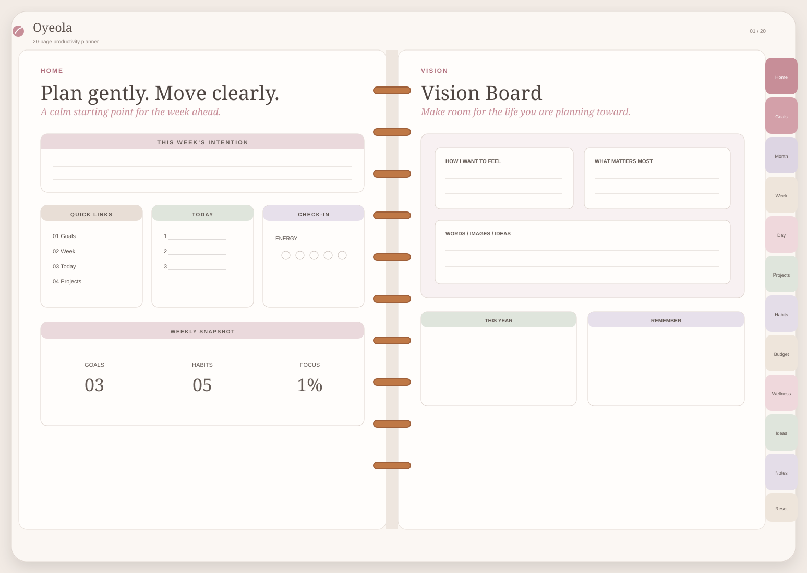

See how the solution works
Try the kind of experience I can build before you hire me.
A proposal should not be the first time you understand the idea. These demos show the customer, team and product experience in practical terms.
Website demo
Help a visitor choose instead of sending everyone to “contact us.”
What this solves
A customer who is interested but still does not know which service or next step fits.
A service finder, estimator, checker or guided enquiry can answer the question the visitor needs answered before they are ready to act.
See how I improve websitesOperations concept
Operations overview
active projects14
team capacity72%
items at risk3
What this solves
Managers should not need a meeting just to learn what is already happening.
This concept shows the kind of visibility an operations system can provide across active work, handoffs, capacity and risk. The numbers are illustrative; the operating pattern is the point.
See how I improve operations
Planner demo
See whether the product feels usable before discussing your custom version.
The sample shows how navigation, tabs, writing space and the centre binder can work together as one tablet-native product system.